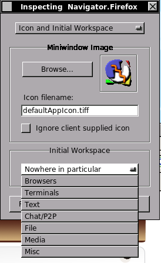

If you’ve never used Window Maker on your Linux desktop, you’re missing out. I’ve dabbled in nearly every window manager/desktop environment out there, and while all have their pros and cons, I always go back to Window Maker.
It’s elegant, functional, flexible, and FAST! For those who like screenshots, this link is a Google Image search for Window Maker.
Window Maker was originally developed as a clone of the NeXTstep desktop, an ancestor of OSX. NeXTstep was considered one of the most productive and innovative desktop environments of its time, and Window Maker has extended this legacy to modern hardware and software platforms.
Enough with the history, let’s get down to business. For starters, you’ll want to get Window Maker installed. Depending on your choice of Linux distribution, these first few steps can vary somewhat. For the sake of this article, I’ll assume you’re running Ubuntu or another Debian derivative.
In any Debian derivative, you can fetch it with:
sudo apt-get install wmaker
Once installed, you can load it up by logging out of your current desktop environment back to the GDM login screen. Go to the Sessions menu and choose Window Maker, then log in normally. Those who don’t use a graphical login like GDM can place
exec wmaker
in the file .xinitrc in their home directory. The default settings for Window Maker aren’t too impressive, but that’s OK, it’ll be pretty slick by the time we’re done here.
Dock and Dockapps
By default, the dock can be found in the upper right corner of the screen and probably looks something like this:

As I mentioned above, this dock was based on the NeXTstep dock, which was a direct ancestor of OSX. Window Maker’s dock offers similar functionality, as a place to launch applications. The real beauty of the Window Maker version, however is that it can be a home for a whole range of mini-applications called, not surprisingly, dockapps. There are hundreds of dockapps available at http://dockapps.org/, but I’ll focus on a few of my favorites that can all be found in Debian (and probably Ubuntu) standard repositories. The dockapps I suggest are:
- wmfire – a CPU monitor. The more CPU is in use, the higher the flames
- Mixer.app – a volume adjustment app
- wmxmms2 – XMMS controls all packed into one little square
- wmclockmon – every desktop needs a clock
- wmmemload – a memory usage monitor
- wmnd – a network monitor
To install, just enter into the command line:
sudo apt-get install wmfire mixer.app wmxmms2 wmclockmon wmmemload wmnd
Any time you run a program in Window Maker, it creates an icon in the bottom-left corner of the screen. It’s kinda like the Windows taskbar, or the window list in Gnome. When you run a dockapp, like say wmfire, the app will start down there in that corner. To place it on your dock, simply drag it from the bottom left, to the top right and place it in the dock. I should mention that many dockapps can be hard to drag, because you’ve often go to drag the very edge of the app, which is sometimes only a few pixels wide.

Do this with each of the dockapps we installed. Once they’re all in place, your dock should look something like this:

To set a dockapp to launch every time Window Maker starts, right-click the border of the dockapp, hit Settings, and choose “Start when Window Maker is started“.
Multiple Desktop Setup
Every window manager in Linux supports multiple desktops, which Window Maker calls “Workspaces”, but some add extremely useful features when it comes to working with them. Window Maker provides a few of those extra features, and two in particular are especially useful:
- the ability to scroll through workspaces with the mouse wheel, and
- the ability to assign certain apps to always open in certain workspaces.
Personally I use between 5 and 8, depending on the purpose of the machine. On my home PC where I spend the most time, I have 7, each with a specific purpose.
Your default Window Maker setup starts with just one workspace. To add more, right-click anywhere on the wallpaper (this is how you bring up the menu), choose “Workspaces”, then “New”. This will create a second “page” to your desktop. Go ahead and create as many workspaces as you like. As I mentioned above, I usually use about 7 but that’s probably more than a lot of people would need. The simplest, though slowest way to switch between those workspaces is by clicking the arrows on the clip icon in the top-left corner. That will flip you back and forth between the workspaces.

The better way to handle that flipping is by using the scroll wheel on your mouse. Window Maker doesn’t set this option by default, so we’ll do it manually. To do that, open the Window Maker preferences tool (third icon on your dock, the one with the screwdriver). Scroll over to the right until you see the mouse icon, and set Mouse Wheel to Switch Workspace.

Click Save, and try it out. Move the mouse over any part of your wallpaper, and scroll the wheel. It should flip between your workspaces.
For now, to finish setting up the workspaces, all we’ve got to do is name them. Click the arrow on the clip to go all the way down, to the Main workspace. Right click the clip, and choose Rename Workspace. Personally, I use the first desktop for my web browsers, so I’d name that workspace Browsers. You can do this on each workspace to name what you want to use it for. Here’s how I usually have mine set up:
#1 – Browsers
#2 – Terminals
#3 – Text Editors
#4 – Chat/P2P
#5 – File Management
#6 – Media
#7 – Misc
So now we’ve got all our workspaces set up, each with a specific purpose, and we’re able to scroll between them with the mouse wheel. There’s only one thing left, and it’s one of the great things that Window Maker provides: the ability to assign certain apps to always open on the right desktop.
Let’s start with the web browser. I’ll assume you’re using a similar setup to mine, with the first workspace being assigned to browsers. Open up Firefox (or whatever other browser you like to use). Right-click the titlebar at the top of the screen and choose “Attributes”.

Now you’ve got a window allowing you to check various preferences. In the dropdown menu at the top, choose Icon and initial Workspace. At the bottom of that page you can choose which workspace that program will start in when launched. You’d be amazed how useful this can be when you’ve got a lot of things running. With a flick of the mouse wheel you can move to whichever desktop your desired program is running on and know it’ll always be there.

Visual Style
Finally, to make our new Window Maker desktop complete, we’ve got to set themes/colors/icons. Let’s start with a basic pre-packaged theme and work from there. You can choose your theme or color scheme from the Window Maker menu. As always, you can open that by right-clicking your desktop. Choose Appearance > Themes or Appearance > Styles to choose a color scheme. I recommend the color style Interlace as a great place to start designing your desktop.
Backgrounds can also be set by placing the desired image in ~/GNUstep/Library/WindowMaker/Backgrounds/ and choosing the image from Appearance > Background > Images.
Now that you’ve got your dockapps, desktops, and theme set up, your desktop probably looks something like this:

Visually, there’s plenty more tweaking that can be done, but the purpose of this article was to cover the functionality, configuring the aspects of Window Maker that make it so amazingly useful and productive. If you’ve gone through this tutorial, you now have a functional desktop with multiple workspaces, each with a special purpose. You’ve got an easy way to manage those desktops (mouse wheel), dockapps to control and monitor your machine, and a nice looking interface to top it all off.
For those who are still interested in tweaking every other part of Window Maker, I highly recommend you flip through the WPrefs utility in your dock and see some of the other options.
For now, you should be well on your way.
Do you use Window Maker? What is the best thing that you love about Window Maker?
I’m a huge fan of Window Maker. I’ve used it for years and years and still haven’t been given a good enough reason to switch to a more ‘modern’ window manager. It really *does* take a while to find all of the settings, but this tutorial is a great start for anyone new. The best part about WM is that it can run very, very smoothly on very old hardware. No, it doesn’t have any of the fancy Compiz stuff – or really anything close – but it absolutely gets the job done, and very quickly.
Thanks, Ross. Any suggestions for other great dockapps?
Great article, thanks!
Thank you so much! I have been googling everywhere to try and understand this for school…what a surprise to find an article that seems to be written just for me! Thanks for the step by step instructions…they really helped.
If I ever decide to migrate to WM, I will definitely use this walk through.
Thanks. This was interesting. I’m hoping to learn more about the Clip and what “Bring Here” means on its menu. I’ve come back to WM for maybe the third time over the dozen or more years I’ve been using Linux. Once again, I’m knocked out by its excellent design and ease of configuration.
Yeah I know what you mean, I keep venturing out to things like Fluxbox and E17. There are some nice window managers out there, but I always come back to Window Maker.
FYI – There’s good info on the clip at WindowMaker.info
Thanks for the comment
-Josh
I’ve had the exact same experience as what you describe. Quote from a blog post I just published:
Apparently, it’s just really, really difficult not to use Window Maker. :)
One small correction; Window Maker did not invent dockapps like the article indicates. They were in NeXTstep as well because applications were able to put functionality into their app icon. Some apps existed only for their app icon, which is exactly the same as wmaker dockapps.
Thanks Truls, I was wondering about that but haven’t found much info regarding the capabilities of the NeXTstep dock.
Windowmaker is what caught my eye initially and made me try a Linux install for the first time…..i’ve used it pretty much ever since.
I’ve tried others but keep coming back to it.
Thx for this cool article. I guess they’ve started developing again….although it’s been a few months since they announced this on
the *.info site, the dev mailing list has a lot of new posts.
Thanks for the tips about dedicated workspaces and dockapps. Now some of the features are less puzzling, and make the desktop much more functional. I think I like this better than Fluxbox, since it comes with its own desktop icon management, and Appearance has more flexible on-the-fly options. I also like adding commands and their keyboard shortcuts to the Applications menu: Though that’s also possible in other window managers, it’s well-integrated in the standard, easily accessed WPrefs in Window Maker.
I’ve brushed across windowmaker a number of times, to finally land on it. I was mostly a user of FVWM, but found that I’d grown tired of hunting down scripts to edit, and others in the family didn’t know how to manipulate it.
I had 3 disappoints with windowmaker in the past, and that always drove me away.
1) I didn’t know how to make a dock that could launch multiple copies of something, like an xterm. This find I found out how to do it.
2)I didn’t know how to launch often used applications (like xterm) with a hot-button. I was always looking in the dock settings. Found out I only had to use the menu editor.
3)I can’t lower a window with a mouse click as I could with FVWM. I’ve found that holding down and ALT key when clicking on a window lowers it, but I’d hoped not to have to reach to the keyboard. Still can’t do that one.